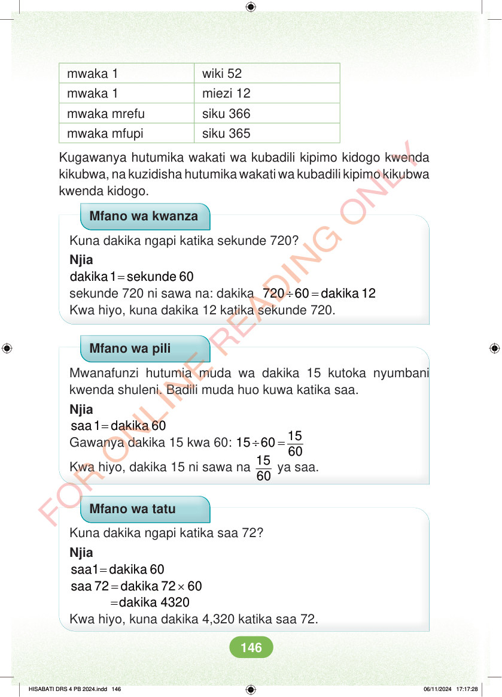

mwaka 1 wiki 52 mwaka 1 miezi 12 mwaka mrefu siku 366 mwaka mfupi siku 365 Kugawanya hutumika wakati wa kubadili kipimo kidogo kwenda kikubwa, na kuzidisha hutumika wakati wa kubadili kipimo kikubwa kwenda kidogo. Mfano wa kwanza Kuna dakika ngapi katika sekunde 720? Njia = dakika 1 sekunde 60 sekunde 720 ni sawa na: dakika ÷ = 720 60 dakika 12 Kwa hiyo, kuna dakika 12 katika sekunde 720. Mfano wa pili Mwanafunzi hutumia muda wa dakika 15 kutoka nyumbani kwenda shuleni. Badili muda huo kuwa katika saa. Njia = saa 1 dakika 60 Gawanya dakika 15 kwa 60: ÷ = 15 15 60 60 Kwa hiyo, dakika 15 ni sawa na 15 60 ya saa. Mfano wa tatu Kuna dakika ngapi katika saa 72? Njia = saa1 dakika 60 = × saa 72 dakika 72 60 =dakika 4320 Kwa hiyo, kuna dakika 4,320 katika saa 72. HISABATI DRS 4 PB 2024.indd 146 HISABATI DRS 4 PB 2024.indd 146 06/11/2024 17:17:28 06/11/2024 17:17:28